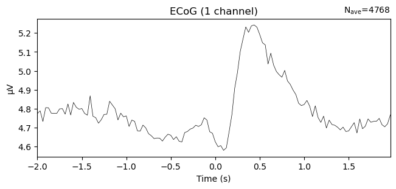
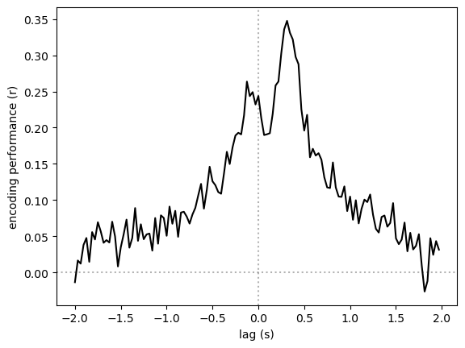
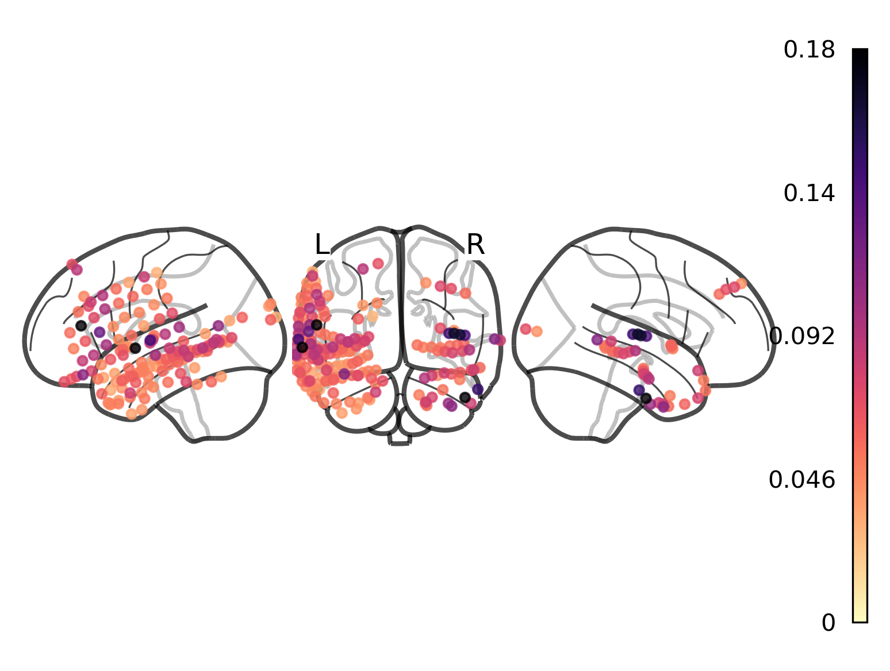

Encoding model tutorial¶
[1]:
import mne
import h5py
import torch
import numpy as np
import pandas as pd
import matplotlib.pyplot as plt
from nilearn.plotting import plot_markers
from mne_bids import BIDSPath
from himalaya.backend import set_backend
from himalaya.ridge import RidgeCV
from himalaya.scoring import correlation_score
from sklearn.model_selection import KFold
from sklearn.pipeline import make_pipeline
from sklearn.preprocessing import StandardScaler
[2]:
use_gpu = True
if torch.cuda.is_available():
set_backend("torch_cuda")
get features¶
[3]:
# modelname, layer = 'gemma2-2b', 13
modelname, layer = 'gpt2-xl', 24
with h5py.File(f"../monkey/stimuli/{modelname}/states.hdf5", "r") as f:
embeddings = f[f"layer-{layer}"][...]
embeddings.shape
[3]:
(5774, 1600)
[4]:
df = pd.read_csv(f"../monkey/stimuli/{modelname}/transcript.tsv", sep="\t", index_col=0)
if 'rank' in df.columns:
model_acc = (df['rank'] == 0).mean()
print(f"Model accuracy: {model_acc*100:.3f}%")
print(df.shape)
df.head()
Model accuracy: 37.617%
(5774, 11)
[4]:
| word_idx | word | start | end | score | hftoken | token_id | rank | true_prob | top_pred | entropy | |
|---|---|---|---|---|---|---|---|---|---|---|---|
| 0 | 0 | Act | 3.710 | 3.790 | 0.367 | ĠAct | 2191 | 1644 | 0.000012 | 0 | 2.402717 |
| 1 | 1 | one, | 3.990 | 4.190 | 0.688 | Ġone | 530 | 92 | 0.000342 | 352 | 3.732054 |
| 2 | 1 | one, | 3.990 | 4.190 | 0.688 | , | 11 | 3 | 0.059520 | 25 | 4.259334 |
| 3 | 2 | monkey | 4.651 | 4.931 | 0.866 | Ġmonkey | 21657 | 4022 | 0.000018 | 3715 | 6.621269 |
| 4 | 3 | in | 4.951 | 5.011 | 0.780 | Ġin | 287 | 15 | 0.004237 | 0 | 4.444837 |
[5]:
aligned_embeddings = []
for _, group in df.groupby("word_idx"):
indices = group.index.to_numpy()
average_emb = embeddings[indices].mean(0)
aligned_embeddings.append(average_emb)
aligned_embeddings = np.stack(aligned_embeddings)
aligned_embeddings.shape
[5]:
(4794, 1600)
[6]:
df = df.groupby("word_idx").agg(dict(word="first", start="first", end="last"))
df.shape
[6]:
(4794, 3)
[7]:
good_mask = df['start'].notna().to_numpy()
aligned_embeddings = aligned_embeddings[good_mask]
aligned_embeddings.shape
[7]:
(4774, 1600)
[8]:
df.dropna(subset=['start'], inplace=True)
df.shape
[8]:
(4774, 3)
load brain data¶
[9]:
edf_path = BIDSPath(
root="../monkey/derivatives/ecogprep",
subject="02",
datatype="ieeg",
description="highgamma",
extension=".fif",
)
edf_path = edf_path.match()[0]
raw = mne.io.read_raw_fif(edf_path)
raw
Opening raw data file ../monkey/derivatives/ecogprep/sub-02/ieeg/sub-02_task-monkey_desc-highgamma_ieeg.fif...
Range : 0 ... 921599 = 0.000 ... 1799.998 secs
Ready.
[9]:
General
| Measurement date | March 11, 2019 10:54:21 GMT |
|---|---|
| Experimenter | Unknown |
| Participant | sub-02 |
Channels
| Digitized points | 189 points |
|---|---|
| Good channels | 186 ECoG |
| Bad channels | None |
| EOG channels | Not available |
| ECG channels | Not available |
Data
| Sampling frequency | 512.00 Hz |
|---|---|
| Highpass | 70.00 Hz |
| Lowpass | 200.00 Hz |
| Filenames | sub-02_task-monkey_desc-highgamma_ieeg.fif |
| Duration | 00:29:60 (HH:MM:SS) |
[10]:
events = np.zeros((len(df), 3), dtype=int)
events[:, 0] = (df.start * raw.info['sfreq']).astype(int)
events.shape
[10]:
(4774, 3)
[11]:
epochs = mne.Epochs(
raw,
events,
tmin=-2.0,
tmax=2.0,
baseline=None,
proj=False,
event_id=None,
preload=True,
event_repeated="merge",
)
epochs._data.shape
Not setting metadata
4774 matching events found
No baseline correction applied
Loading data for 4774 events and 2049 original time points ...
6 bad epochs dropped
[11]:
(4768, 186, 2049)
[12]:
epochs = epochs.resample(sfreq=32, npad='auto', method='fft', window='hamming')
# epochs = epochs.resample(sfreq=32, npad='auto', method='polyphase')
epochs._data.shape
[12]:
(4768, 186, 128)
[25]:
evoked = epochs.average()
evoked = evoked.pick("LGA10")
evoked.plot()
plt.show()
Need more than one channel to make topography for ecog. Disabling interactivity.

encoding model analyses¶
setup data¶
[13]:
epochs_data = epochs.get_data(copy=True)
epochs_data = epochs_data.reshape(len(epochs), -1)
epochs_shape = epochs._data.shape[1:]
epochs_shape, epochs_data.shape
[13]:
((186, 128), (4768, 23808))
[14]:
selected_df = df.iloc[epochs.selection]
averaged_embeddings = aligned_embeddings[epochs.selection]
averaged_embeddings.shape
[14]:
(4768, 1600)
[15]:
X = averaged_embeddings
Y = epochs_data
if use_gpu:
X = X.astype(np.float32)
Y = Y.astype(np.float32)
X.shape, Y.shape
[15]:
((4768, 1600), (4768, 23808))
build model¶
[16]:
alphas = np.logspace(1, 10, 10)
inner_cv = KFold(n_splits=5, shuffle=False)
model = make_pipeline(
StandardScaler(), RidgeCV(alphas, fit_intercept=True, cv=inner_cv)
)
model
[16]:
Pipeline(steps=[('standardscaler', StandardScaler()),
('ridgecv',
RidgeCV(alphas=array([1.e+01, 1.e+02, 1.e+03, 1.e+04, 1.e+05, 1.e+06, 1.e+07, 1.e+08,
1.e+09, 1.e+10]),
cv=KFold(n_splits=5, random_state=None, shuffle=False),
fit_intercept=True))])In a Jupyter environment, please rerun this cell to show the HTML representation or trust the notebook. On GitHub, the HTML representation is unable to render, please try loading this page with nbviewer.org.
Pipeline(steps=[('standardscaler', StandardScaler()),
('ridgecv',
RidgeCV(alphas=array([1.e+01, 1.e+02, 1.e+03, 1.e+04, 1.e+05, 1.e+06, 1.e+07, 1.e+08,
1.e+09, 1.e+10]),
cv=KFold(n_splits=5, random_state=None, shuffle=False),
fit_intercept=True))])StandardScaler()
RidgeCV(alphas=array([1.e+01, 1.e+02, 1.e+03, 1.e+04, 1.e+05, 1.e+06, 1.e+07, 1.e+08,
1.e+09, 1.e+10]),
cv=KFold(n_splits=5, random_state=None, shuffle=False),
fit_intercept=True)train model¶
[27]:
corrs = []
kfold = KFold(2, shuffle=False)
for train_index, test_index in kfold.split(X):
X_train, X_test = X[train_index], X[test_index]
Y_train, Y_test = Y[train_index], Y[test_index]
break
scaler = StandardScaler()
Y_train = scaler.fit_transform(Y_train)
Y_test = scaler.transform(Y_test)
model.fit(X_train, Y_train)
Y_preds = model.predict(X_test)
corr = correlation_score(Y_test, Y_preds).reshape(epochs_shape)
if use_gpu:
corr = corr.numpy(force=True)
corrs.append(corr)
corrs = np.stack(corrs)
corrs.shape
---------------------------------------------------------------------------
ValueError Traceback (most recent call last)
Cell In[27], line 23
19 corr = corr.numpy(force=True)
21 corrs.append(corr)
---> 23 corrs = np.stack(corrs)
24 corrs.shape
File /scratch/gpfs/zzada/conda-envs/mne/lib/python3.12/site-packages/numpy/core/shape_base.py:445, in stack(arrays, axis, out, dtype, casting)
443 arrays = [asanyarray(arr) for arr in arrays]
444 if not arrays:
--> 445 raise ValueError('need at least one array to stack')
447 shapes = {arr.shape for arr in arrays}
448 if len(shapes) != 1:
ValueError: need at least one array to stack
[18]:
lags = np.arange(-2 * 512, 2 * 512, 16) / 512
electrode = 'LGA10'
electrode_id = raw.info['ch_names'].index(electrode)
plt.axvline(0, c='k', alpha=0.3, ls=':')
plt.axhline(0, c='k', alpha=0.3, ls=':')
plt.plot(lags, corrs.mean(0)[electrode_id], c='k')
plt.xlabel('lag (s)')
plt.ylabel('encoding performance (r)')
plt.show()

[19]:
ch2loc = {ch['ch_name']: ch['loc'][:3] for ch in raw.info['chs']}
coords = np.vstack([ch2loc[ch] for ch in raw.info['ch_names']])
coords *= 1000 # nilearn likes to plot in meters, not mm
coords.shape
[19]:
(186, 3)
[20]:
scores = corrs.mean(0).max(-1)
print(scores.shape)
vmax = np.quantile(scores, .99)
fig, ax = plt.subplots(dpi=300)
order = scores.argsort()
plot_markers(scores[order], coords[order],
node_size=15, display_mode='lyr',
node_vmin=0, node_vmax=vmax,
figure=fig, axes=ax, alpha=0.8,
node_cmap='magma_r', colorbar=True)
fig.show()
(186,)
